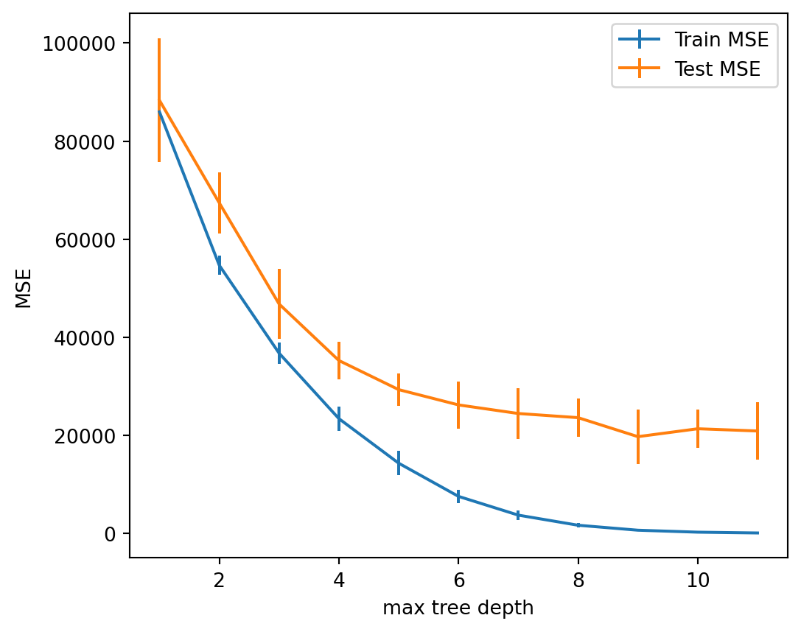
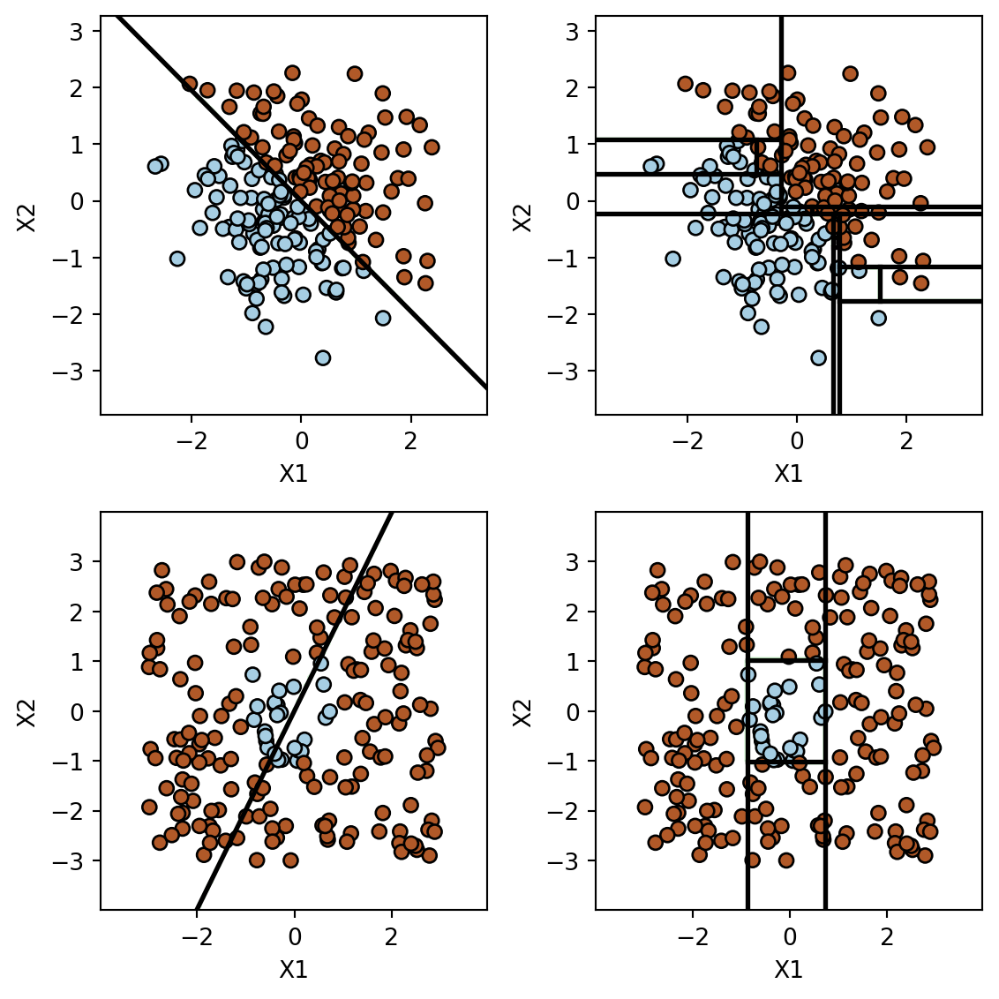

Introduction to Statistical Learning
Decision Trees and Random Forests - Class 9
Giora Simchoni
gsimchoni@gmail.com and add #intro2sl in subject
Stat. and OR Department, TAU
Intro. to Decision Trees
The models we learned so far
- Parameteric, linear, global: linear regression, logistic regression, Ridge, Lasso, PCR
- Non-parametric, non-linear, local: \(K\)-nearest neighbors
Simpler idea (non-paramteric, non-linear, local):
- Segment predictor space \(\mathcal{X}\) to relatively homogenous neighborhoods in \(\mathcal{Y}\)
- For each region \(R_1, \dots, R_M\) predict constant/class \(c_m\), s.t.: \[\hat{f}(X) = \sum_{m = 1}^M c_m\mathbb{I}\left(X \in R_m\right)\]
Is this not a linear model?
What should \(R_1, \dots, R_M\) be?
What should \(c_1, \dots, c_M\) be?
How does a doctor think?
\(\Rightarrow\) recursive binary splitting.
Decision trees at high level
- Root: start with \(\hat{f}(X) = \bar{y}\) or \(\max\{\hat{P}(y = 0), \hat{P}(y = 1)\}\) to all observations
- Recursively:
- Choose \((j, s)\) pair: feature \(j\) to split on value \(s\): \(X_j \le s\) and \(X_j > s\)
- Predict \(c_m\) for each region \(R_1, \dots, R_M\)
- Until \(STOP\) criterion
Questions:
- How to choose a split at each node of the tree?
- How to fit a value \(c_m\) for each region / terminal node / leaf?
- What is \(STOP\) criterion?
Regression Trees
How to split?
Criterion: Minimize RSS on training.
Given set of \(r\) observations in current node, define for a variable \(j\) and possible split point \(s\): \[L(j,s) = \{i\leq r: x_{ij} \leq s\}\;,\;\; R(j,s) = \{i\leq r: x_{ij} > s\}\] \[\bar{y}_L =\frac{\sum_{i \in L(j,s)} y_i}{|L(j,s)|}\;,\; \bar{y}_R=\frac{\sum_{i \in R(j,s)} y_i}{|R(j,s)|}\] \[RSS(j,s) = \sum_{i \in L(j,s)} (y_i - \bar{y}_L)^2 + \sum_{i \in R(j,s)} (y_i - \bar{y}_R)^2\]
And find the pair \(j, s\) which minimize this RSS among all possible pairs
What is the complexity of this search?
How to fit a value \(c_m\) at leaves?
Similar to OLS, we want to estimate \(\hat{y}(x) \approx E(y|x)\)
We interpret the splitting as finding homogeneous areas with similar \(y\) values in our data, hence hopefully similar \(E(y|x).\)
Consequently, given a leaf (terminal node) \(R_m\) with set of observations \(Q_m \subseteq \{1,\dots,n\}\), we estimate: \[c_m = \bar{y}_{R_m} = \frac{\sum_{i \in Q_m} y_i}{|Q_m|}\]
When to \(STOP\)?
- Why stop?
- Bias-variance tradeoff!
- Tree too shallow — high bias, underfitting
- Tree too deep — high variance, overfitting
Some heuristics:
- Maximum tree depth (i.e. maximum “questions”, a hyperparameter)
- Minimum improvement in RSS
- Minimum node size \(Q\)
What could be the issue with each of those?
Cost complexity pruning
- Grow a deep tree \(T_0\), e.g. with the size criterion
- Prune to tree \(T\) with some \(\alpha\) penalty on its size: \[C_\alpha(T) = RSS(T) + \alpha|T|\]
- Choose \(T_\alpha\) which gives minimum \(C_\alpha(T)\)
- For a given \(\alpha\) efficient algorithms exist to find the pruning path
- \(\alpha\) is chosen with CV
Example: credit data

Example: credit data
Classification Trees
How to split?
- Criterion: Minimize impurity on training:
- If \(\hat{p}_{kL}, \hat{p}_{kR}\) are the left and right empricial probabilities for each class \(k\), and \(\hat{y}_{L}, \hat{y}_{R}\) are the most common classes:
- Misclassification error: \[MC(j,s) = \sum_{i \in L(j,s)} \mathbb{I}\{y_i \neq \hat{y}_L\} + \sum_{i \in R(j,s)} \mathbb{I}\{y_i \neq \hat{y}_R\}\]
- Gini index: \(\quad Gini(j,s) = \sum_{k=1}^K n_{L} \hat{p}_{kL}(1- \hat{p}_{kL}) + \sum_{k=1}^K n_{R} \hat{p}_{kR}(1- \hat{p}_{kR})\)
- Cross-entropy: \[CE(j,s) = -\sum_{k=1}^K n_{L} \hat{p}_{kL}\log(\hat{p}_{kL}) - \sum_{k=1}^K n_{R} \hat{p}_{kR}\log(\hat{p}_{kR})\]
- Otherwise the algorithm stays the same (e.g. cost complexity pruning)
On impurity measures
For a single node, \(K = 2\) classes, no weighing:
We mostly use Gini and Cross-entropy to grow the tree, not misclassification error. Why?
Trees issues
Categorical features
- Ordered categorical variables: treat exactly as continuous
- Unordered categorical variables:
- All subsets exhaustive search? (two main problems)
- Grouping for values with too few observations
- CART approach:
- For each category \(q\) denote \(\bar{y}_q\) the average of the observations of class \(q\) in the current node.
- Sort categories in increasing order of \(\bar{y}_q\) : \(\bar{y}_{(1)} \leq \bar{y}_{(2)} \leq \ldots \leq \bar{y}_{(Q)}\)
- The optimal split on the training data is guaranteed to be one of the \(Q-1\) splits along this list
- For 2-class classification, we simply replace \(\bar{y}_q\) with \(\hat{p}_q\)
Missing data
- Many models’ only choices: ignore missing data or impute them (e.g. mean imputation, EM algorithm)
- Two more natural choices in trees:
- Surrogate splits: for every split \((j, s)\) keep the next most “similar” \((j', s')\) splits
- If observation \(\mathbb{x}_i\) is missing element \(x_{ij}\) for split \((j, s)\) — send it both left and right!
- Its average (weighted) prediction has a nice interpretation: \(\mathbb{E}(y|x_{ij} \text{ is missing})\)
Trees advantages
- Highly interpretable, “neighborhoods” (when tree is not large, but see variance issue)
- Easy to implement (if-else statements)
- Fast (in prediction at least)
- Little pre-processing of predictors needed (continuous, categorical, missing)
- Non-parameteric, non-linear, assumption free
- Feature selection built-in
- Low bias, in general
Trees disadvantages

Trees disadvantages
- Lack of smoothness: rectangular predictor regions are not always a good thing
- Intuitive appeal is misleading: very unstable, sensitive to small changes in data
- Greedy: no guarantee for optimality
- Complexity of prediction limited in no. of leaves! (For a simple CART)
- HIGH VARIANCE \(\Rightarrow\) not a competitive model in terms of prediction accuracy!
Random Forests
Ensemble methods: using trees as subroutines
Instead of a single tree being a model, combine many trees into a model:
- Bagging and Random Forest: Fit different trees to the data and average them
- Boosting: Adaptively build a model from adding more and more trees
We will focus now on Random Forest (also Bagging), later discuss boosting
Main idea of Random Forest: Take advantage of the instability and high variance of the trees
Trees are unstable and greedy: if we change the data a little bit, the tree can change a lot
Now we intentionally change (randomize) the data to get a different tree every time, and average them
Reminder: the value of averaging
Assume \(z_i \sim F\) has some distribution with mean \(\mu\) and variance \(\sigma^2\)
If \(z_1,\dots,z_m \sim F\) are independent, then \(Var(\bar{z}) = \sigma^2 / m\), so \(\bar{z}\) is close to \(\mu\) for large \(m\)
What if \(z_1,\dots,z_m\) are dependent?
Slightly more complex setting: assume \(z_1,\dots,z_m\) are somewhat dependent \(Cov(z_i,z_j) = \rho \sigma^2,\;\rho<1\)
Now we still get some variance reduction from averaging: \[Var(\bar{z}) \approx \rho\sigma^2 + (1-\rho)\sigma^2/ m\]
This is exactly the intuition behind Random Forest
Random forest algorithm
- Repeat \(B\) times:
- Randomize the data (by taking a bootstrap sample \(b\))
- Build a tree \(T_b(X)\) on the randomized data, also randomize tree building: randomly choose \(m\) features to consider at each node
- To predict at new \(x_0\), apply each tree and average their predictions: \(\hat{f}(x_0) = \frac{1}{B}\sum_{b = 1}^B T_b(x_0)\) or take majority class for classification
- Intuition: trees are different because of randomization, they are like \(z_1,...z_n \stackrel{\cdot}{\sim} P(y|x_0)\)
- Hence we expect (and indeed see!) that Random Forest gives more accurate predictions of \(E(y|x)\) or \(P(y=1|x)\) than single trees
Example: credit data
Summary of Random Forest
Uses advantages of trees, mitigates their shortcomings
RF trees should be as different as possible from each other:
- Uses the high-variance property of trees
- Add randomization: subsampling of training data for each tree; randomizations in tree splitting
Add diversity by making trees bigger, control variance by averaging, therefore:
- Trees should be deep
- Should build and average as many of them as computationally possible
- Great advantages for “big data”: highly parallelizable and (almost) hyperparameter free!
- But it is also our first “black box” model